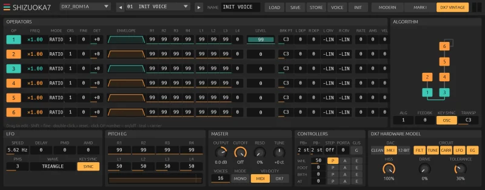

You've heard this bell on a thousand records.
Six operators and thirty-two algorithms gave 1983 its electric pianos, its glassy bells and its slap bass. They also gave a generation of musicians a manual nobody finished reading.
Shizuoka7 runs Dexed's faithful open-source FM engine and adds a model of the DX7 hardware: the stepping envelopes, the 12-bit converter and the output stage that put the grit into the shimmer.
Load your old cartridges and you'll know the sound at once. You'll also find out what it was missing all these years.

FM engine plus a hardware model.
Shizuoka7
FM synthesizer after the Yamaha DX7, hardware included.
Open source · AU · VST3 · CLAP
Jardim SonoroOpen-source audio research
Download: jardimsonoro.com/audioSource & issues: github.com/nagualcode/shizuoka7
Synthesizers03